Analyse, nettoyage et modélisation de la base de données des accidents de la route en France (BAAC)
Source des données
- Lien : www.data.gouv.fr
- Format : CSV / Pandas DataFrame
- Taille : 23,9MB
- Objectif du projet : analyser la gravité et la fréquence des accidents selon les conditions de circulation.
- Feuilles : caracteristiques.csv, lieux.csv, vehicules.csv, usagers.csv
- Description : Les bases BAAC répertorient l'intégralité des accidents corporels en France métropolitaine et DOM.
- Le dataset regroupe plus de 53 000 accidents corporels entre 2005 et 2024, avec 58 colonnes décrivant les circonstances.
- Pour comprendre chaque attribut, se référer au PDF descriptif du dataset (lien ci-dessus).
- Projet réalisé en Python (Pandas, Matplotlib, Numpy) et SQL (PostgreSQL + SQLite).


- Aperçu du dataset :
- Caractéristiques
- Lieux
- Usagers
- Véhicules
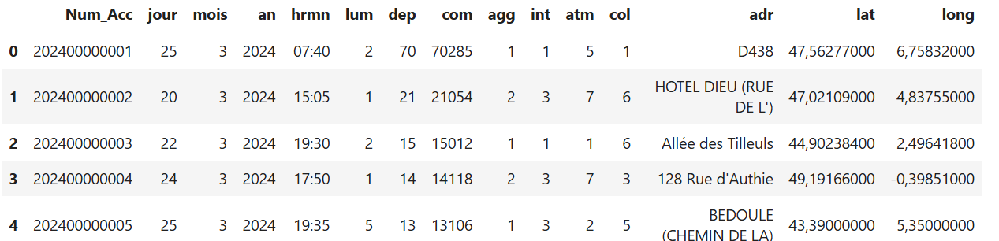
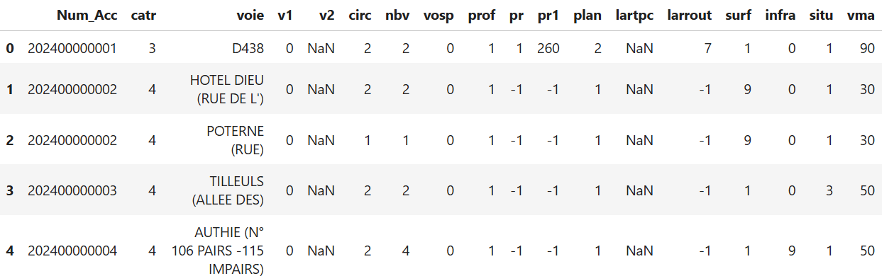
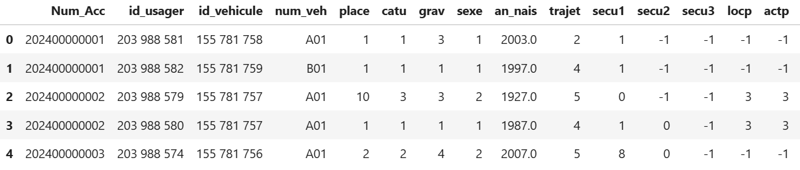
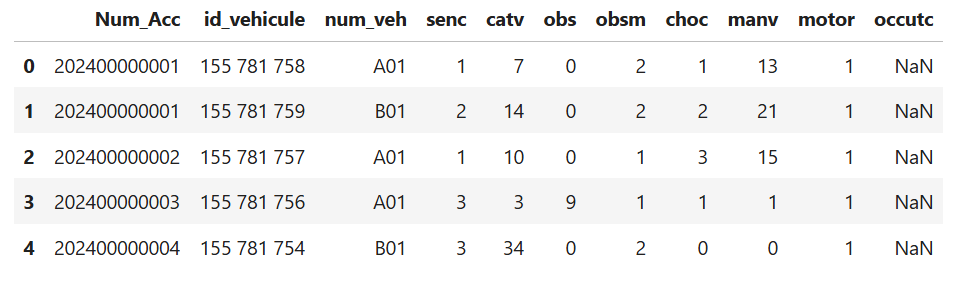
Le projet a été séparé en plusieurs étapes :


1) Partie data cleaning et exploration initiale du dataset
Le dataset BAAC est particulièrement complexe et riche, contenant plusieurs dizaines de milliers d’accidents et une grande quantité d’informations réparties sur quatre tables distinctes. Avant de commencer le nettoyage, j’ai pris le temps d’étudier en détail la documentation officielle fournie dans le PDF descriptif du dataset (lien disponible plus haut). Cette étape était indispensable pour comprendre précisément le rôle de chaque attribut, les valeurs possibles pour chaque colonne et la logique générale de la base. Une fois cette analyse terminée, j’ai pu aborder le nettoyage de manière structurée, en traitant la base table par table. J’ai commencé par la table caract, en vérifiant la cohérence des données, en corrigeant les types, en gérant les valeurs manquantes et en identifiant les valeurs aberrantes avant de poursuivre avec les autres tables.

Exploration initiale de la table Caractéristique
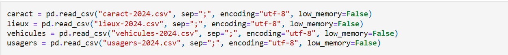
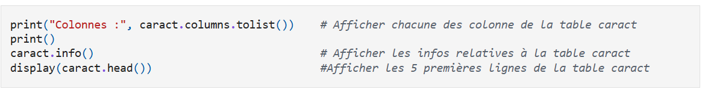
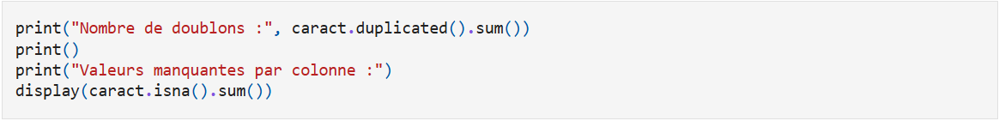
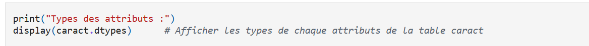
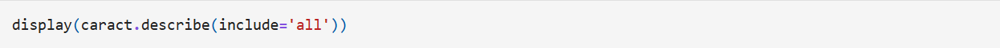
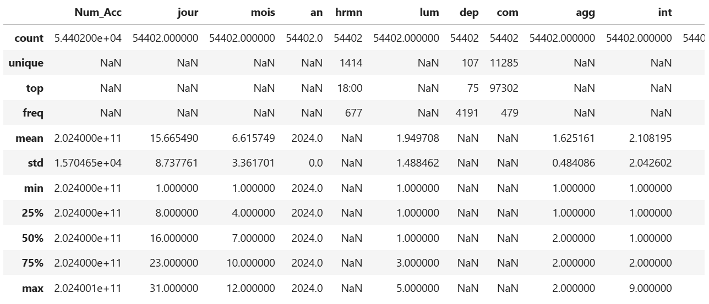
Après l'exploration initiale du dataset j'ai pu en conclure :
- Il y a 2310 valeurs manquantes dans la colonne adr (adresse), qu’on peut remplacer par "Unknown".
- Les colonnes codées utilisent -1 comme valeur "non renseigné" (atm, col, lum). Ces valeurs ne correspondent à aucune catégorie valide → remplacement par NaN.
- La colonne Publisher contient 58 valeurs manquantes, et Year en contient 271. Publisher → "Unknown", Year → NaN.
- Aucune valeur aberrante détectée en dehors des -1 déjà traités. Les colonnes dep et com doivent rester en texte pour conserver les zéros initiaux.
- Les colonnes lat et long sont importées en texte (virgule décimale). Conversion en float après remplacement de la virgule par un point.
- Transformation des codes en texte pour la colonne lum (lumière).
Nettoyage de la table Caractéristique
Étapes du nettoyage
- Remplacer les cases vides dans adr par "Unknown".
- Remplacer les -1 dans atm, col, lum par NaN.
- Convertir la colonne hrmn en datetime.time.
- Créer une colonne Date à partir de jour, mois, an puis supprimer ces colonnes.
- Convertir lat et long en float.
- Transformer les codes en texte pour lum.
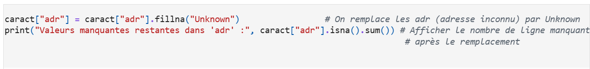
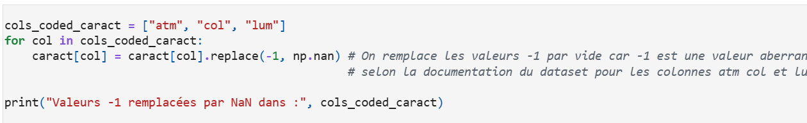
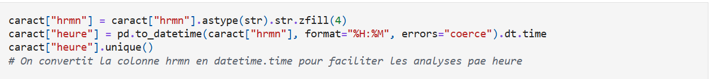
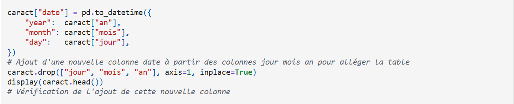
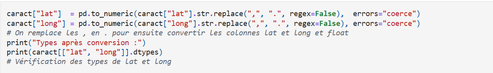
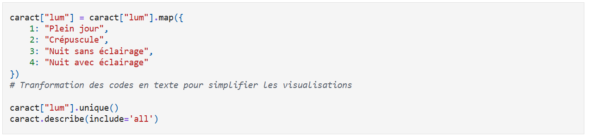
Exploration initiale de la table lieux
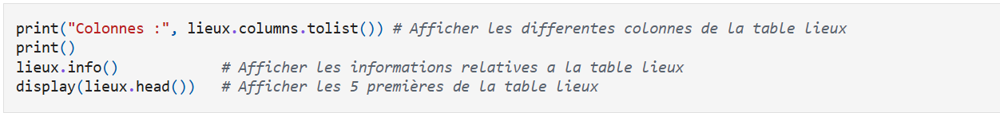
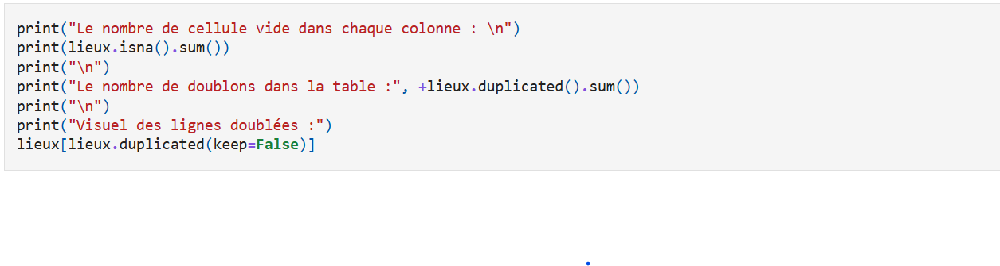
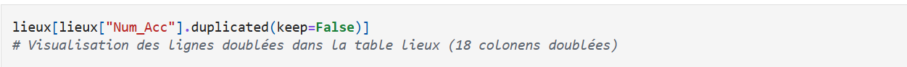
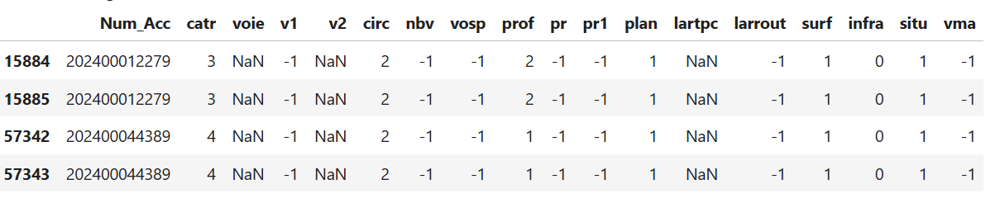
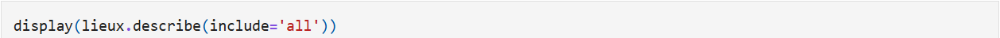
Après l'exploration initiale du dataset j'ai pu en conclure :
- Il y a énormément de valeur manquante dans plusieurs colonne : 13331 pour voie, 64332 pour v2, 70215 pour lartcp
- Il y a 18 lignes doublées au total
- Les doublons correspondent à des lignes strictement identiques pour un même numéro d'accident. Chaque accident ne devant être associé qu'à un seul lieu, ces répétitions traduisent une erreur de saisie ou d'importation.
- On constate que la colonne vma (vitesse maximale autorisée) contient des valeurs aberrantes — une valeur maximale à 900 et une valeur minimale à -1 — qui ne sont pas plausibles ; nous les remplacerons par NaN avant toute analyse.